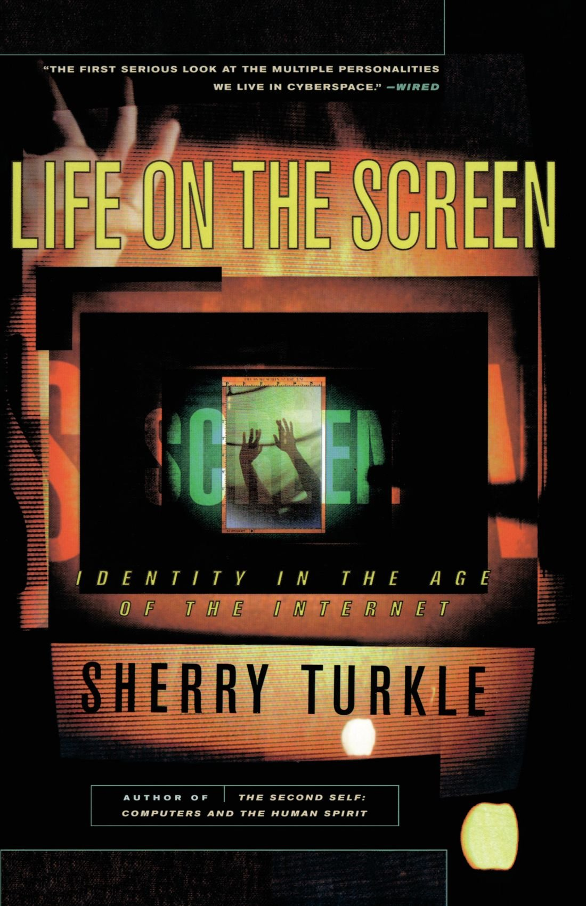

Sherry Turkle - Life on the Screen- 1995
“…I argue that it is computer screens where we project ourselves onto our own dramas, dramas in which we are producer, director, and star. […] We are using life on computer screens to become comfortable with new ways of thinking about evolution, relationships, sexuality, politics, and identity.” p. 26
To what extent is Turkle’s story and arguments based in technological determinism? What are the implications for that assumption in specific relation to identity studies?
Do we agree/disagree with Turkle’s arguments about calcultion/similation and hard/soft programming? How do these relate or compare to McPherson’s argument about Unix?
Is simulation vs. reality a fruitful dichotomy for talking about computers?
How might we connect the online identity performances Turkle describes with the concept of identity performance more broadly (i.e. Butler)? Is it the same or different? Why?
To what extent are we satisfied with Turkle’s relaying of online behavior with real-world behavior? Does she make the case that they are different or the same? How might we fill in these gaps?
In chapter 8, Turkle seems to argue that gender performance online might lead to more empathy and understanding, do we buy this? How might examples like Mr. Bungle and the concept of “cat fishing” augment this argument?
How are social/moral codes online created or enforced? How might identity play within online communities enhance or inhibit the creation and enforcement of these codes?